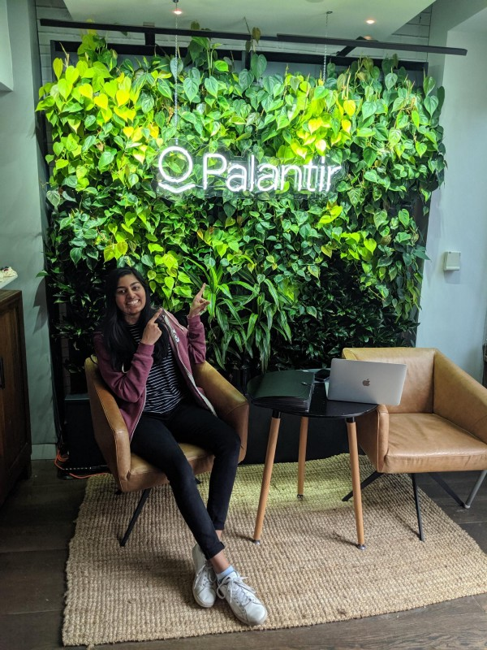

Working across the pond

This summer was filled with unknowns.
London, a city I knew no one in, on a continent in which I’d never left an airport. Palantir , where I’d intern as a forward deployed software engineer — I knew it’d be something different, but not exactly how.
These unknowns led to quite a bit of discovery. I was able to reflect on my place in the world and interface with people of all kinds of backgrounds and attitudes on life, careers, and politics. I became a better conversationalist and a more aware individual.
At Palantir, I explored aspects of my skillset I hadn’t before exercised so strongly in a work environment. I was able to layer my technical skills with my ability to synthesize, design and present solutions. I approached broader problems, worked across teams to understand and deploy necessary software, and felt a larger sense of ownership, responsibility, and impact.
Above all, I loved working with the people and felt empowered to make decisions. Major thanks to Steve Basher , Chloe Lathe , and Kristine Snyder for helping me be successful this summer, and the numerous others with whom I worked with for making me feel welcome. 🙂
—